Plotting Charts A picture is worth a thousand words. That’s why data is usually presented in a graphical form, and for that reason spreadsheets provide different types of charts. This section presents the main chart types and how to plot them in Excel 2010. Charts creation Regardless the chart type, the steps to create a chart are: Select the range that contains the data to plot. Data should be arranged in series (vertically or horizontally) following the next rules: Do not leave empty rows or columns within the data range or between data labels and data. Only one row and/or one column should be used for data labels. Each data label should be unique. Select the type of chart from the Charts panel on the ribbon’s Insert tab. 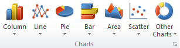 Set the chart design (data serie to plot, order, etc.). You can use the ribbon’s Design tab. 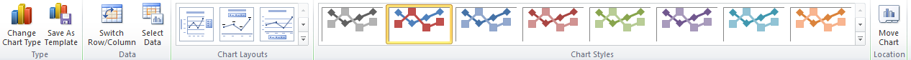 Apply a layout (title, axis, legend, grids, data labels, etc.). You can use the ribbon’s Layout tab. 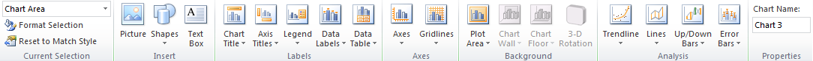 Apply a style format (text, line and background colours). You can use the ribbon’s Format tab. 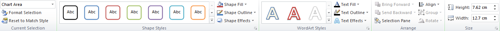 Charts are embedded in the same worksheet that data by default but it’s possible to put it on a separate worksheet. For that right-clicking the chart background and select Move chart. In the dialog that appears select New sheet give a name to the worksheet a click OK. Charts are linked to data from which they come. This means that any change in the data will be immediately reflected in any derived chart. Types of charts There are eleven major chart types (Column, Line, Pie, Bar, Area, Scatter, Stock, Surface, Doughnut, Bubble and Radar) and each has many subtypes. Each chart type has a purpose and requires data to be arranged in a particular way. So choosing the right chart is probably the most important decision. The main chart types and their purpose are presented below. Column and bar charts A column or bar chart is a set of bars (usually rectangles) graphed over an horizontal and vertical axis (also known as XY axis). Each bar is graphed over the corresponding category with a length proportional to the value of the category in the data serie. Usually more than one data serie are plotted and bars corresponding to different series are differentiated with colours. In a column chart, categories appear horizontally and values appear vertically, whereas in a bar chart, categories appear vertically. Column charts, unlike bar charts, is suitable for emphasizing data variations over a period of time. Example. The next figure shows a column chart showing the evolution of fruit prices. Looking at the chart you can quickly realize that strawberries are the most expensive (longest bars) and apples the cheapest (shortest bars) along the time. Also that the prices of strawberries and bananas are decreasing, the prices of oranges are increasing and the prices of apples are almost stables. Excel offers a lot of shapes for the bars (rectangles, cylinders, cones, pyramids) in 2-D an 3-D, and allows to stack bars. Also is possible to add error bars to the bars. Example. The animation below shows how to create a column chart for the apple prices evolution (one data serie). And the animation below shows how to create a column chart for the fruit prices evolution (several data series). Line charts A line chart display a serie of data points called markers connected by straight line segments. Each marker is graphed over the corresponding category at a height proportional to the value of the category in the data serie. It’s similar to a column chart but using markers at the end of bars instead of bars, and joining them with straight line segments. Line charts are suitable for displaying and comparing trends over a period of time. Example. The next figure shows a line chart showing the evolution of fruit prices. Looking at the chart you can quickly realize that strawberries are the most expensive (higher markers) and apples the cheapest (lowest markers) along the time. Also that the prices of strawberries and bananas are decreasing (lines with negative slope), the prices of oranges are increasing (line with positive slope) and the prices of apples first decrease an then increases. Excel offers different subtypes of line charts, with or without data points in 2-D and 3-D, and also allows to stack lines. Example. The animation below shows how to create a line chart for the fruit prices evolution. Looking at the chart you can quickly realize which prices are increasing and which prices are decreasing. 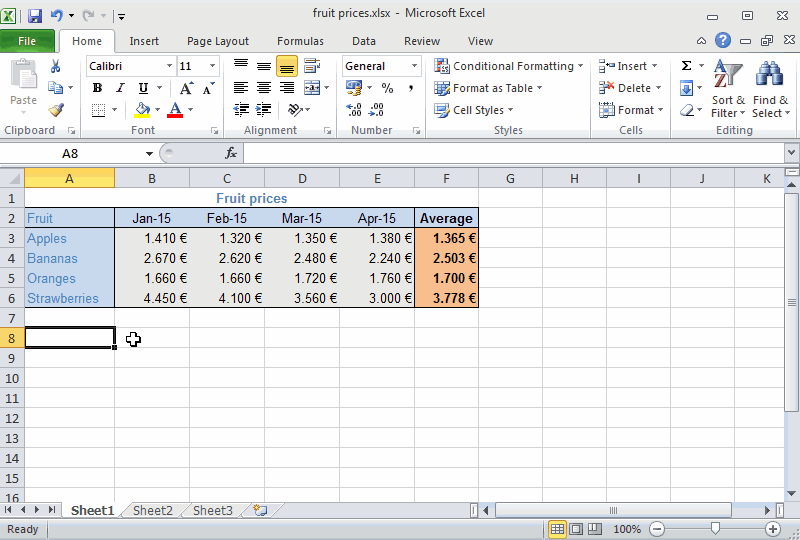 Area charts An area chart is similar to a line chart but filling the area between the line and the horizontal axis. Area charts are suitable for displaying the relative importance of values over time. It’ss similar to a line chart, but because the area between lines is filled in, the area chart puts greater emphasis on the magnitude of values and less emphasis on the flow of change over time. Example. The next figure shows an area chart showing the evolution of accumulated fruit prices. Looking at the chart you can quickly realize that strawberries are the most expensive (the largest area) and that accumulated prices are decreasing. 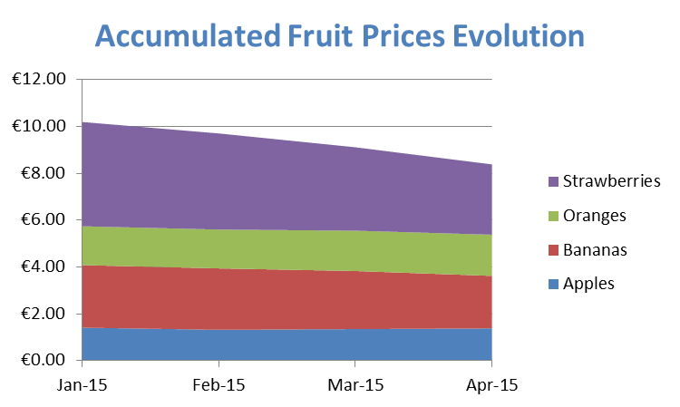 Excel allows to plot areas in 2-D or 3-D and also to stack areas. Example. The animation below shows how to create an area chart for the evolution of accumulated fruit prices. Pie charts A pie chart is a circle divided into slices called sectors. Each sector represents a category of the data serie an has an angle or area proportional to the quantity that correspond to the category. Pie charts are suitable for displaying the parts of a whole. Unlike the other charts presented so far, which can graph multiple data series, pie charts can graph just one data series. Example. The next figure shows a pie chart comparing fruit prices. Looking at the chart you can quickly realize that strawberries are the most expensive (biggest sector) and apples are the cheapest (smallest sector). 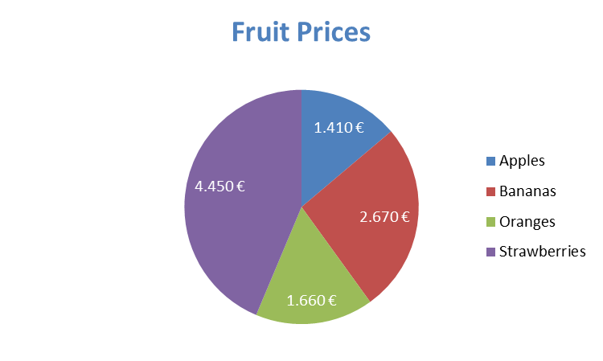 Again Excel has several subtypes that allows you to emphasize a part of the whole in 2-D or 3-D. Example. The animation below shows how to create a pie chart comparing the fruit prices of January. Doughnut charts Doughnut charts are similar to pie charts except for its ability to display more than one data series. Example. The next figure shows a doughnut chart comparing fruit prices in January and April. The inner doughnut correspond to prices of January and the outer to prices of April. Looking at the chart you can quickly realize that, although the price of apples were smaller in April than in January, it was relatively higher in April than in January, compared to the rest of fruit prices. Example. The animation below shows how to create a doughnut chart comparing the fruit prices in January and April. XY Scatter charts An XY scatter chart is a point cloud graphed using Cartesian coordinates. Each point correspond to a pair of values. The first value of the pair determines the position on the horizontal axis and the second value of the pair determines the position on the vertical axis. XY Scatter charts are suitable for displaying correlation among the data pairs of two numeric variables. Example. The next figure shows an XY Scatter chart relating banana and strawberry prices. Looking at the chart you can quickly realize that there is a positive correlation (when banana price increase, strawberry price increase too). Example. The animation below shows how to create an XY Scatter chart relating banana and strawberry prices. Histograms A histogram is a graphical representation of the distribution of numerical data. It’s similar to a column chart but data values are grouped into interval classes and each bar represents a class. Histograms charts are suitable for displaying frequency of data values in one numeric variable. To plot an histogram previously is required to load the Analysis ToolPak add-in. Example. The animation below shows how to create an histogram of the grades in a course. Chart design Changing the data source You can change the data range graphed in a chart anytime clicking the Select Data button of the Data panel on the ribbon’s Design tab. This brings a dialog where you can select the new data range, switch rows and columns series, add new data series to graph and their labels, remove or edit existing data series or change the order in which are graphed in the chart. Observe that is possible to plot in the same chart data in separated ranges. Example. The animation below shows how to add the orange prices data serie to a column chart for the apple prices evolution. 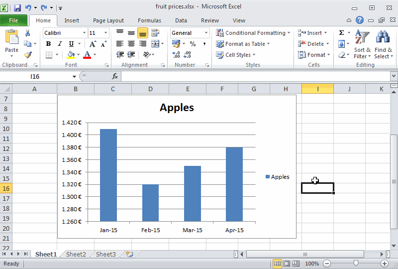 Switching rows and columns When Excel creates a new chart with x and y axis, it automatically graphs the data by rows in the selected range so that the column headings appear along the horizontal axis and the row headings appear in the legend. If you want to switch from row series to column series, that is, that row headings appear on the horizontal axis and the column headings appear in the legend, click the Switch Row/Column button of the Data panel on the ribbon’s Design tab. Example. The animation below shows how to switch from row series to column series in a column chart for the fruit prices evolution. 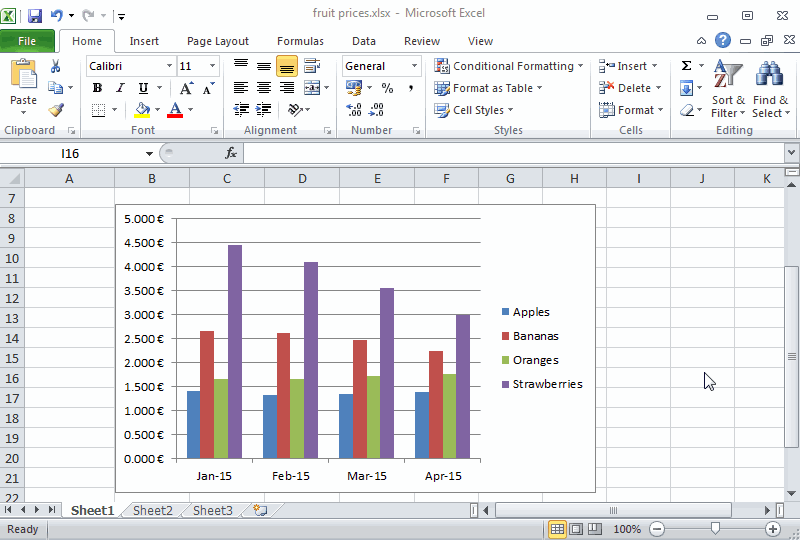 Chart layout After creating a chart you can add new layout elements like chart titles, axis titles, legends, data labels, grids, trend lines, error bars, etc. or modify the existing ones. 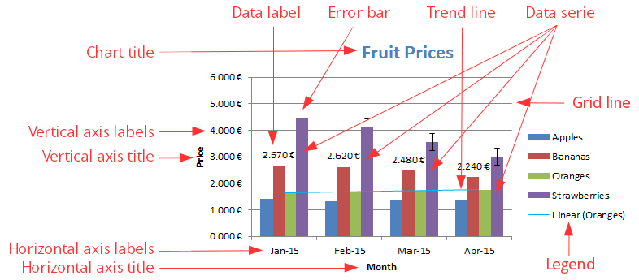 To format any element of a chart right-click the element (bar, line, title, axis, legend, etc) and select the corresponding option at the bottom of the contextual menu. This will open a dialog where you can perform the desired changes for the selected element. Titles You can add a title to the chart selecting the chart and clicking the Chart Title button of the Labels panel on the ribbon’s Layout tab. That will show a drop down menu that let you choose between a centered overlay title (inside the chart area) or an above chart (outside the chart area). Example. The animation below shows how to add a title to a column chart for the fruits prices evolution and how to change the font colour. 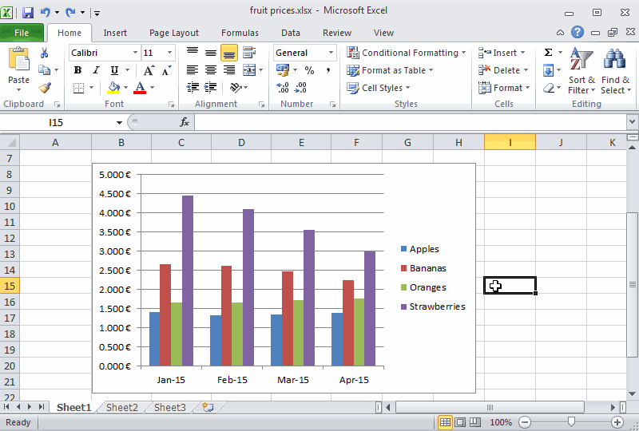 Axes You can add a title to the horizontal or vertical axes selecting the chart and clicking the Axis Title button of the Labels panel on the ribbon’s Layout tab. Example. The animation below shows how to add a title to the horizontal and vertical axes of a column chart for the fruits prices evolution. The vertical axis title is rotated 90 degrees. 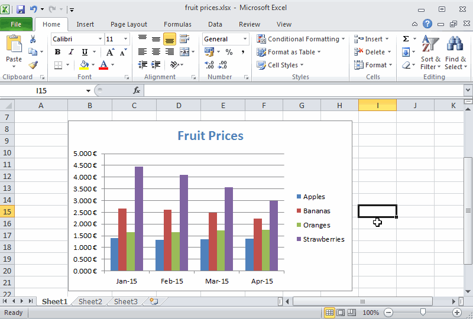 One of the most important parts of a chart are axis scales. Excel allows you to configure the axis scale setting the minimum and maximum showed in the axis, the major and minor units, the format of thick marks (small lines intersecting axis that indicate categories, scale units or chart data series) and their labels, or even the scale type (linear by default or logarithmic). To configure an axis right-click any label of the axis (not the axis title) and select the Format Axis option from the contextual menu. This will open a dialog with a lot of axis options. Change whatever you want and click Close. Example. The animation below shows how to change the scales of the horizontal and vertical axes of a column chart for the apple prices evolution. Observe that in the original chart the minimum value of the vertical axis scale is 1.26, what magnify the differences between month prices. To avoid that the minimum value of vertical scale is set to €0, and the major unit is set to €0.1. Also the format of tick marks labels is changed to currency with two decimal places. On the other hand, the tick marks labels of the horizontal axis are rotated 30 degrees counterclockwise. Grid A grid is composed of horizontal or vertical lines (usually equally spaced) over the axes. Grids are helpful to mark out more precisely the position of markers, bars, lines or other chart elements in the axis scales. Excel allows to plot both horizontal and vertical grid lines for major and minor tick marks. To plot vertical grid lines right-click any label of the horizontal axis and select the Add Major Gridlines option for drawing lines over the major tick marks, or Add Minor Gridlines for drawing lines over the minor tick marks. To plot horizontal grid lines do the same but right-clicking any label of the vertical axis. Once the grid line is plotted you can change its format right-clicking any label of the axis and selecting the Format Major Gridlines or Format Minor Gridlines option. Example. The animation below shows how add vertical major grid lines and horizontal minor grid lines. Also show how to change the line style of minor grid lines. Legends A legend is key that identifies patterns, colors, or symbols associated with the markers of a chart data series. The legend shows the data series name corresponding to each data marker. Excel usually plots a legend to the right of the chart but it’s possible to change the legend to other position or to remove it. To plot the lenged of a chart click the Legend button of the Labels panel on the ribbon’s Layout tab. This shows a drop down menu with different positions for the legend. After plotting the legend, if you want to format it right-click it and select Format Legend. This will open a dialog where you can choose the legend position, the frame and background colours and many other legend aspects. Finally if you want to remove a legend, just select it and press the Supr key. Example. The animation below shows how add a legend for the fruits to the right of a column chart with the fruit prices evolution. Also it shows how to plot a frame around the legend and how to move the legend to the top. 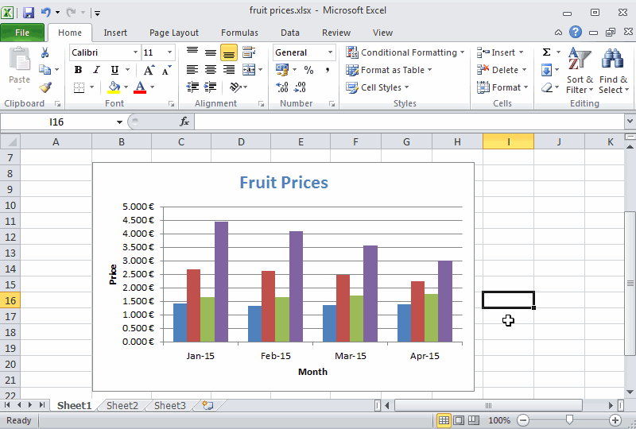 Data series The aspect of any graphic element used to represent a data serie in a chart (bars, markers, lines, sectors, etc) can be easily changed. To format the graphic element corresponding to a data serie right-click it and select the Format Data Series option. This will open a dialog where you can change the shape, border and background colours, space between elements, and many other aspects. It’s also possible to format only one element of the serie. For that you need to click it two times (not double-clicking), then right-click it and select the Format Data Point option. Example. The animation below shows how to change the background colour of orange bars in a column chart for the fruits prices evolution. It also shows how to add a glow effect over the highest bar. 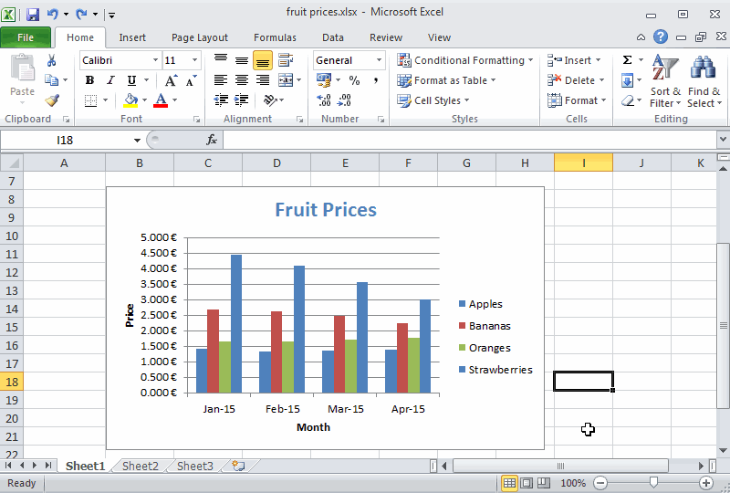 Data labels Sometime is useful to plot the values for a data serie next to their bars, markers, lines, sectors or other chart elements. To plot the values of a data serie right-click the chart element (bar, marker, line, sector, etc) corresponding to the data serie and select the Data Labels option. This will plot the value corresponding to each bar, marker, sector, etc. close to it. Example. The animation below shows how add a legend for the fruits to the right of a column chart with the fruit prices evolution. Also it shows how to plot a frame around the legend and how to move the legend to the top. 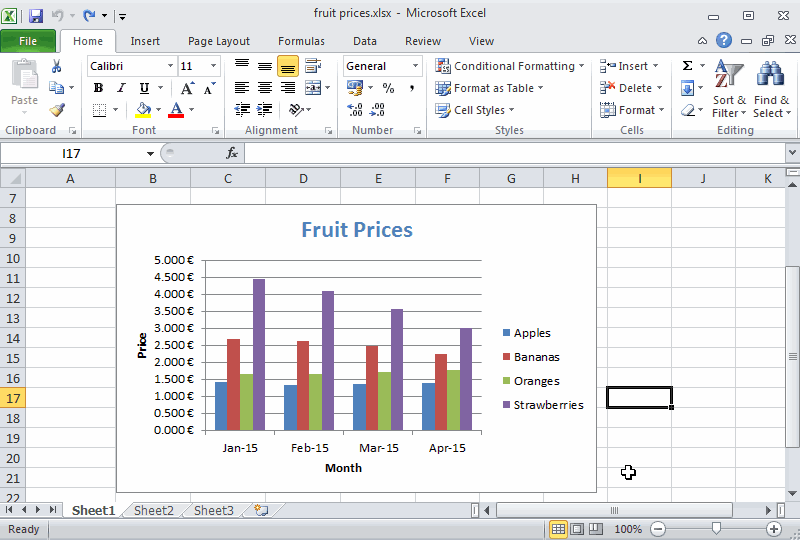 Chart styles Finally, the Chart styles panel on the ribbon’s Design tab has many predefined chart styles that combine different colours for graphics elements and backgrounds. Apply one of those styles is as easy as select the chart an click the desired style. Also, the Shape styles panel on the ribbon’s Format tab have predefined styles for the background area and frame of the chart. Example. The animation below shows how to apply some chart and shape styles to a column chart with the fruit prices evolution. Excel Previous Formulas Next Database Management